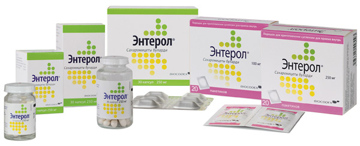

В предлагаемом обзоре речь пойдёт о имеющейся на настоящий момент доказательной базе по применению пробиотика Saccharomyces boulardii для лечения инфекционной диареи, профилактики и лечения антибиотик-ассоциированной диареи и диареи путешественников.
За последние два десятилетия значительно возрос интерес к пробиотическим штаммам микроорганизмов. Пробиотики — это полезные бактерии, которые при назначении в адекватных количествах оказывают благотворное влияние на здоровье [1]. Весьма пристальное внимание к пробиотикам вызвано возможностью использования препаратов с доказанным эффективным действием, и при этом не приносящим вреда организму человека. Список пробиотических микроорганизмов достаточно большой, однако наиболее изучены микроорганизмы-продуценты молочной кислоты — лактобактерии и бифидобактерии (Lactobacillus spp. и Bifidobacterium spp.) и непатогенные дрожжевые грибы Saccharomyces boulardii [1].
S. boulardii — это аскомицеты, которые обладают генетически детерминированной устойчивостью практически ко всем антибактериальным препаратам, что принципиально отличает S. boulardii от других микробных пробиотиков и используется как преимущество, поскольку данный пробиотик можно назначать одновременно с курсом антибактериальной терапии [2]. Эти дрожжевые грибы являются для человека транзиторной флорой, поэтому через несколько дней после окончания приёма препарата полностью выводятся из организма без побочных явлений.
В настоящее время имеется весомая доказательная база, которая подтверждает эффективность и безопасность S. boulardii для лечения инфекционной диареи, в профилактике и лечении антибиотик-ассоциированной диареи и диареи путешественников. Возможные механизмы действия при данных состояниях — прямое конкурентное вытеснение патогенных микроорганизмов из кишечника, антисекреторный эффект при секреторной диарее, антитоксическое действие, а также усиление и модуляция иммунного ответа [3].
Острая диарея
В связи с увеличением резистентности кишечных патогенов к антибиотикам в последнее время появилась необходимость поиска новых методов лечения диареи. Непатогенные микроорганизмы колонизируют стенку кишечника и ограничивают избыточный рост патогенных бактерий, а конкуренция за рецепторы слизистой уменьшает адгезию и рост энтеротоксичных грамотрицательных анаэробов и энтеропатогенных вирусов.
В статье, опубликованной в журнале The World Journal of Gastroenterology в 2010 г., рассмотрены современные доказательства эффективности и безопасности применения дрожжевого гриба-пробиотика S. boulardii при различных заболеваниях у взрослых пациентов [4]. В мета-анализ, посвящённый использованию S. boulardii, вошли результаты рандомизированных контролируемых клинических исследований, опубликованные в различных медицинских журналах без языковых ограничений. Поиск исследований проводился в медицинских базах данных, в частности, Medline, веб-сайтах клинических исследований и тезисах конференций за период с 1976 г. по 2009 г. Из 31 рандомизированного плацебо контролируемого исследования в 27 исследованиях с общим числом включенных пациентов 5029 пробиотик S. boulardii продемонстрировал статистически достоверно превышающую плацебо эффективность и безопасность в 84% оцениваемых случаев [4].
В 2014 г. был выполнен систематический обзор, в ходе которого оценивалась эффективность S. boulardii при острой диарее у детей [5]. Поиск исследований для включения в систематический обзор осуществлялся в базах данных Medline, Embase, CINAHL, Scopus и Кокрановской библиотеке (Cochrane Library) до сентября 2013 г. включительно без языковых ограничений. В мета-анализ включались рандомизированные и нерандомизированные контролируемые исследования, в которых оценивалась эффективность S. boulardii при лечении острой диареи у детей. Всего было идентифицировано 1248 публикаций, из которых 22 соответствовали критериям включения в мета-анализ. Объединённые данные исследований показали, что S. boulardii статистически достоверно сокращает длительность диареи (среднее различие -19,7 ч, 95% ДИ от -26,05 до -13,34), уменьшает частоту стула ко 2 дню заболевания (среднее различие -0,74, 95% ДИ от -1,38 до -0,10) и к 3 дню заболевания (среднее различие -1,24, 95% ДИ от -2,13 до -0,35), а также снижает риск сохранения диареи к 3 дню (отношение рисков 0,41, 95% ДИ 0,27-0,60) и к 4 дню заболевания (отношение рисков 0,38, 95% ДИ 0,24-0,59) по сравнению с контрольной группой. Таким образом, результаты систематического обзора отчётливо продемонстрировали эффективность и безопасность применения S. boulardii для лечения детей с острой диареей [5].
Согласно позиции рабочей группы Европейского общества педиатрической гастроэнтерологии, гепатологии и питания по про- и пребиотикам (European Society for Paediatric Gastroenterology, Hepatology, and Nutrition — ESPGHAN), S. boulardii включён в перечень пробиотиков с сильным уровнем рекомендаций к использованию для лечения детей с острым гастроэнтеритом в качестве дополнения к регидратации [6].
Диарея путешественников
Диарея путешественников является весьма распространённым заболеванием, частота возникновения которого варьирует в пределах от 5 до 50% в зависимости от места путешествия. Основными в профилактике диареи являются диетические рекомендации, а в лечении используются хинолоны и макролиды. В 2007 г. опубликован мета-анализ 12 рандомизированных контролируемых клинических исследований, в ходе которого изучалась эффективность пробиотиков в профилактике диареи путешественников. Как оказалось, S. boulardii достоверно предотвращает возникновение диареи и может быть предложен в качестве эффективного и безопасного метода её профилактики [7].
Антибиотик-ассоциированная диарея
Лечение антибиотиками нередко приводит к нарушению устойчивости микрофлоры желудочно-кишечного тракта к колонизации. Это может быть причиной осложнений, наиболее серьёзным из которых является развитие Clostridium difficile-ассоциированной диареи или антибиотик-ассоциированной диареи (ААД). По данным различных авторов, частота развития антибиотик-ассоциированной диареи у госпитализированных пациентов в зависимости от профиля, класса используемых препаратов и действия предрасполагающих факторов может варьировать в диапазоне от 3 до 29%, причём ААД могут протекать в различных формах — от нетяжёлой самокупирующейся диареи до псевдомембранозного и фульминантного колита.
Применение пробиотиков для лечения и профилактики С. difficile-ассоциированной диареи является вполне логичным ходом с точки зрения патогенеза данного состояния. Механизм лечебного действия дрожжевого гриба S. boulardii обусловлен продукцией протеолитического фермента, препятствующего связыванию токсинов С. difficile рецепторами.
Результаты первого посвященного данной проблеме мета-анализа 9 рандомизированных контролируемых исследований, опубликованного ещё в 2002 г., показали, что пробиотики помогают предотвратить развитие ААД. Так, приём лактобактерий снизил частоту возникновения диареи на 66%, дрожжевых грибов S. boulardii — на 61% [8]. Однако при лечении С. difficile-ассоциированной диареи доказана эффективность лишь S. boulardii [9].
По данным упоминавшегося выше мета-анализа 2010 г. (McFarland L.V.) был показан достоверный эффект от использования S. boulardii в профилактике антибиотик-ассоциированной диареи (относительный риск 0,47, 95% ДИ 0,35-0,63, р<0,001) [4].
В 2012 г. в журнале Annals of Internal Medicine были опубликованы результаты ещё одного систематического обзора и мета-анализа, в ходе которого проводилась оценка эффективности и безопасности пробиотиков в профилактике возникновения ААД у детей и взрослых пациентов, получающих антибиотики. В мета-анализ и систематический обзор включались рандомизированные контролируемые исследования с участием взрослых пациентов или детей, получавших антибиотики, в которых сравнивалось применение любого пробиотического штамма или различных доз специфического пробиотика с плацебо или отсутствием лечения и проводилась оценка частоты развития Clostridium difficile-ассоциированной диареи. Всего пригодными для включения в мета-анализ оказались 20 исследований с общим количеством участников 3818 человек. Как оказалось, пробиотики снижают частоту развития ААД на 66% (объединённый относительный риск 0,34, 95% доверительный интервал 0,24-0,49). В популяции с частотой ААД 5% (средний риск в контрольной группе) профилактическое применение пробиотиков будет предотвращать 33 эпизода (доверительный интервал 25-38 эпизодов) на 1000 человек. В группе применения пробиотиков нежелательный явления отмечались у 9,3% пациентов по сравнению с 12,6% в группе контроля (относительный риск 0,82, 95% доверительный интервал 0,65-1,05) [10].
Нельзя не остановиться на ещё одном опубликованном год назад мета-анализе, в котором были проанализированы данные 17 исследований, посвящённых оценке эффективности S. boulardii в профилактике ААД [11]. В 14 из 17 проанализированных исследованиях с общим количеством пациентов 4627 человек оказалось, что назначение S. boulardii обладает протективным эффектом в диапазоне от 43,7% до 87,3%. Мета-анализ (5 исследований, 1076 пациентов) продемонстрировал статистически достоверное снижение риска развития ААД с 17,2% до 6,7%. Таким образом, на настоящий момент имеются убедительные доказательства того, что дрожжевые грибы S. boulardii эффективны в профилактике ААД, особенно у госпитализированных пациентов. Одновременное назначение антибиотиков с S. boulardii статистически достоверно снижает развитие ААД на более чем 50%.
Таким образом, использование S. boulardii в качестве лечебного и профилактического препарата-пробиотика доказательно обоснованно как по параметру эффективности, так и с точки зрения безопасности при различных формах диареи у взрослых и детей.
Безопасность пробиотиков
ВОЗ, Управление по контролю над пищевыми продуктами и лекарственными препаратами США (FDA) и Организация по продуктам питания и сельскому хозяйству ООН (FAO) заключают, что пробиотики считаются безопасными и имеют GRAS статус (Generally Regarded As Safe). Это означает, что они могут использоваться без ограничения в фармацевтической промышленности. Однако указанные выше организации отмечают, что пробиотики, тем не менее, могут вызывать 4 типа нежелательных лекарственных реакций:
- Системные инфекции.
- Негативное влияние на метаболизм.
- Чрезмерную стимуляцию иммунной системы у чувствительных лиц.
- Перенос генов резистентности.
Имеется несколько публикаций, описывающих случаи возникновения системных инфекций, вызванных применением пробиотиков. В частности, при применении S. boulardii зарегистрированы единичные случаи фунгемии, чаще возникшие из-за контаминации сосудистых катетеров [11-16]. Следует отметить, что все без исключения описанные случаи фунгемии возникли у пациентов с выраженной иммуносупрессией, предшествующей длительной госпитализацией, хирургическим вмешательством и/или тяжёлыми основными заболеваниями. За весь период клинического применения пробиотика S. boulardii не было зарегистрировано случаев системных инфекций у обычных среднестатистических пациентов (и взрослых, и детей) без иммуносупрессии.
Таким образом, эффективность и безопасность пробиотика S. boulardii для лечения и профилактики различных типов диареи продемонстрированы в контролируемых клинических исследованиях и подтверждены многочисленными мета-анализами и систематическими обзорами.
В Российской Федерации пробиотик S. boulardii зарегистрирован под торговым названием Энтерол (компания BIOCODEX, Франция) в лекарственной форме капсулы по 250 мг в блистерах и флаконах и порошок (саше) для приготовления суспензии для приёма внутрь 100 мг и 250 мг. Форма выпуска капсул в блистерах по 250 мг и саше по 250 мг наиболее предпочтительна, поскольку рекомендуемая суточная доза S. boulardii у взрослых и детей старше 3 лет составляет 250-1000 мг, у детей до 3 лет — 500 мг/сутки.

Список использованной литературы
- Kanmani P., Satish Kumar R., Yuvaraj N., et al. Probiotics and its functionally valuable products-a review. Crit Rev Food Sci Nutr. 2013; 53(6): 641-58.
- Dinleyici E.C., Eren M., Ozen M., et al. Effectiveness and safety of Saccharomyces boulardii for acute infectious diarrhea. Expert Opin Biol Ther. 2012; 12(4): 395-410.
- Kligler B., Cohrssen A. Probiotics. Am Fam Physician. 2008; 78: 1073-1078.
- McFarland L.V. Systematic review and meta-analysis of Saccharomyces boulardii in adult patients. World J Gastroenterol. 2010; 16(18): 2202-22.
- Feizizadeh S., Salehi-Abargouei A., Akbari V. Efficacy and Safety of Saccharomyces boulardii for Acute Diarrhea. Pediatrics. 2014; 134(1): e176-91.
- Szajewska H, Guarino A, Hojsak I et al. on Behalf of the ESPGHAN Working Group for Probiotics and Prebiotics. Use of Probiotics for Management of Acute Gastroenteritis: A Position Paper by the ESPGHAN Working Group for Probiotics and Prebiotics. JPGN 2014; 58 (4): 531-9.
- McFarland L.V. Meta-analysis of probiotics for the prevention of traveler's diarrhea. Travel Med Infect Dis. 2007; 5(2): 97-105.
- D'Souza A.L., Rajkumar C., Cooke J., Bulpitt C.J. Probiotics in prevention of antibiotic associated diarrhoea: meta-analysis. BMJ. 2002; 324(7350): 1361.
- McFarland L.V. Meta-analysis of probiotics for the prevention of antibiotic associated diarrhea and the treatment of Clostridium difficile disease. Am J Gastroenterol. 2006; 101(4): 812-22.
- Johnston B.C., Ma S.S., Goldenberg J.Z., et al. Probiotics for the Prevention of Clostridium difficile-Associated Diarrhea: A Systematic Review and Meta-analysis. Ann Intern Med. 2012; 157(12): 878-88.
- Micklefield G. Saccharomyces boulardii in the treatment and prevention of antibiotic-associated diarrhea. MMW Fortschr Med. 2014; 156 Suppl 1: 18-22.
- Hennequin C., Kauffmann-Lacroix C., Jobert A., et al. Possible role of catheters in Saccharomyces boulardii fungemia. Eur J Clin Microbiol Infect Dis. 2000; 19(1): 16-20.
- Lestin F., Pertschy A., Rimek D. Fungemia after oral treatment with Saccharomyces boulardii in a patient with multiple comorbidities. Dtsch Med Wochenschr. 2003; 128(48): 2531-3.
- de Llanos R., Querol A., Pemán J., et al. Food and probiotic strains from the Saccharomyces cerevisiae species as a possible origin of human systemic infections. Int J Food Microbiol. 2006; 110(3): 286-90.
- Thygesen J.B., Glerup H., Tarp B. Saccharomyces boulardii fungemia caused by treatment with a probioticum. BMJ Case Rep. 2012.
- Santino I., Alari A., Bono S., et al. Saccharomyces cerevisiae fungemia, a possible consequence of the treatment of Clostridium difficile colitis with a probioticum. Int J Immunopathol Pharmacol. 2014; 27(1): 143-6.
- Eren Z., Gurol Y., Sonmezoglu M., et al. Saccharomyces cerevisiae fungemia in an elderly patient following probiotic treatment. Mikrobiyol Bul. 2014; 48(2): 351-5.